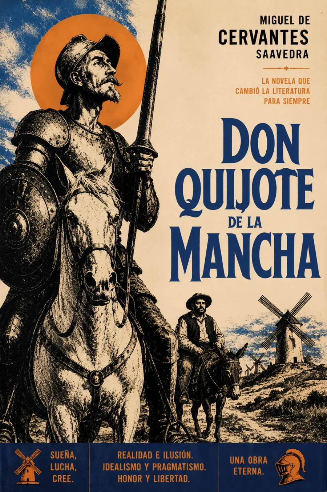

SINOPSIS
La obra maestra de Miguel de Cervantes, publicada en dos partes —1605 y 1615—, narra las salidas de Alonso Quijano, un hidalgo manchego que enloquece de tanto leer libros de caballerías y se lanza al camino como el caballero andante Don Quijote, acompañado de su escudero Sancho Panza. La segunda parte, escrita tras la aparición de un Quijote apócrifo, alcanza una modernidad asombrosa: los propios personajes saben que ya son famosos por sus aventuras impresas. Fundacional para la novela moderna, es la obra más traducida y editada de la lengua española después de la Biblia.
Texto e índice · Centro Virtual Cervantes. Primera parte: 1605; segunda parte: 1615. La navegación por capítulos se incorporará con las grabaciones.
LECTURA POR PARTES
Primera parte · 1605
Segunda parte · 1615
RESEÑAS

Excelente